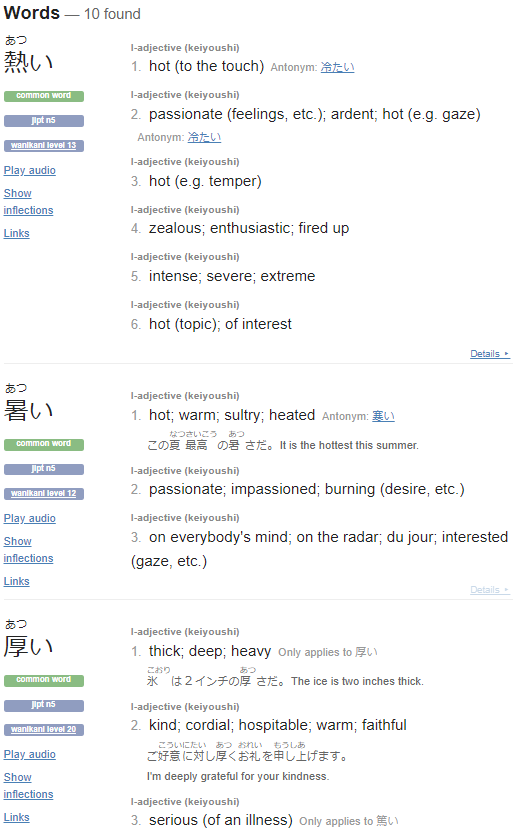

Common N5-N4 word flash
始める
始める はじめる Start
いつ始めるつもりですか When do you plan on beginning?
いつ始めるつもりですか When do you plan on beginning?
Rhythm Heaven Fever is a fantastic game made up of several smaller rhythm games for the Wii. Preferentially, as my own beat-up copy calls it, Beat the Beat: Rhythm Paradise which is actually closer to the original title of みんなのリズム天国.

Writing about "お天気 お届けします" singed 天 into my gray matter. It was used in the context of weather meaning Heaven/Sky by itself which means that 天気 technically can be read as "Sky feeling", a reading that I adore. 天国 would translate literally as "Heaven Land"; Paradise. Making the original title essentially translate to Everyone's Rhythm Paradise.
Localization is a fickle subject. It's much more than literally translating the words from one language to another, as the two different English titles promptly showcase. Culture, mannerism, symbolism and what have you also gets localized. Rhythm Paradise happens to have a particularly interesting case of this, the Manzai(まんざい) game.
まんざい(漫才) did not get localized. It's not available at all in the localized versions of the game. As the name suggests, it's a game about performing a traditional Japanese comedy act called a manzai, typically performed by a duo with one as the straight-man and one as the funny-man. In this case the duo consists of two birds. One having a routine entirely consisting of 駄洒落 i.e. wordplays. In this case being especially short wordplays that play entirely on certain word combinations sounding the same and creating sentences that satisfyingly still technically works as a sentence. A little bit in the same vein as a "dad joke" that makes you groan more than laugh. The other bird is simply agreeing with and keeping the red bird in line with an over the top reaction when it "messes up", very manzai. Why did it not get localized?
Humour me by disregarding the obvious answer(localization team has to split a high-school teacher's pizza budget 10-ways). Is it because it would require too much extra effort to write new puns? Most rhythm games in Rhythm Paradise has minimal dialogue, if at all, so I could maybe initially understand it being a large jump to suddenly require a bunch of audio dialogue work. However, let me just torch my straw-man by pointing towards the fact that localizers have consistently been localizing entire songs before, like in Fan Club(アイドル) and Love Rap(だいスキRAP)
The difference here being that the Manzai game has the added difficulty of replicating the environment of a manzai act and not just translating something that follows the beat. Having 布団が吹っ飛んだ(futon ga futtonda) that literally translates as The futon was blown off be the joke misses the mark completely since the pun is rooted in the fact that "futon ga" sounds similar to "futtonda". Some are even just direct homophones like イクラはいくら？(ikura wa ikura) which means How much is the salted salmon roe? These are painfully simple word puns, surely this is not impossible to localize. Did the localizers think the problem instead lied in that having a traditionally Japanese looking comedy skit would step over the line of being too foreign of a concept? Who knows, but these exact jokes have been localized before.
In DBZ and Dr. Slump we can actually observe how translators chose to localize one of the jokes used in Manzai birds:
This localization successfully accomplishes the goal of being a dad-joke that makes you scrunch your face from how "bad" it is. However, it lacks the sing-song nature that the 駄洒落 has in the Manzai game. Let's have a shot at making the same kind of puns in English and with a similar cadence.今日は #だじゃれの日 ！
— ドラゴンボールオフィシャル (@DB_official_jp) September 1, 2022
悟空が放った「フトンがふっとんだ!!!」は海外だとどうなっているか知っていますか？ pic.twitter.com/Fc8IuAZz6z
So, every single one of the Japanese puns is one sentence with around 5 to 10 syllables in total.
The first half of the sentence always sounds similar to the second half of the sentence.
Whether it being a homophone: サルが去る？ (saru ga saru? - Will the monkey leave?) and ラクダは楽だ (rakuda wa rakuda?, Camels feel easy),
Alliteration: 草がクサイ (kusa ga kusai, Grass smells bad) and ミカンがみっかんない (mikan ga mikkannai, I can't find the orange),
Rhyme: 太陽が見たいよう (taiyou ga mitaiyou, I want to see the sun) and プリンがたっぷりん (purin ga tappurin, The pudding is enough)
or whatever you would classify these as: メガネには目がねい (megane niwa me ga nei, Eyeglasses don't have eyes)
魚かな？まさかな！ (sakana kana? masaka na!?, Is it a fish? No way!).
Let's try to apply the same rules:
Did I succeed? Maybe not. I'm just some guy after all. Do I still think that Manzai Birds could and should have been localized to the rest of the world? No doubt.
混乱と美しい
The movie Weathering with You(天気の子) is interesting in more ways than one, but let's just for now take a quick look at its English title and how different it is compared to the Japanese one. 天気 means weather and 子 means child. The の particle essentially makes it "Child of Weather" or "Weather Child". Technically and maybe more amusingly it also means "Weather's Child".
Makoto Shinkai's previous movie Your Name(君の名は) did not experience that big of a change. 君 means you. 名 means name. The の particle does indeed make it translate to "Your Name". But what about the は at the end? It makes the translation be closer to "Your name is" Which makes it seem like either a question or an incomplete statement, which if you watch the movie actually fits surprisingly well. However the English title more or less rids this feeling completely.
Anyways, here are some phrases that I heard and how the subtitles decided to translate it. Processing the language in this way is fun albeit maybe a bit too laid back ┐(´∀｀)┌
Did you know that Polynesia has over 1000 thousand islands spread over a 2 million km² area? Imagine the motivation of Polynesian explorers when discovering a new island and seeing the speck of another island by the horizon.
One of the most satisfying things about just starting out learning a language is consuming a piece of content that previously was incomprehensible but now is just a smidgen more understandable. Incredibly fulfilling no matter how small.
Spending any amount of effort towards acknowledging your own small discoveries
gives me confidence which in turn only feeds into itself by creating more small discoveries.
Even just miniscule things like stumbling upon words like 本当 and immediately perceiving it as right/real without needing
to scratch my chin and close my eyes before remembering what it means i.e.
"本当 has been moved from the slow and deliberate system 2 to the fast and automatic system 1"
- Daniel Kahneman, probably.
It's silly, but me catching the simplest word play like: 「１・２・３・４・GO・HA・N！」in ごはんはおかず brings me great joy and works as proof that it's in fact not incomprehensible. Meaning that with enough of these small breakthroughs it will eventually result in being able to follow the entire song, just as long as these small things happen periodically enough.
The same way the Polynesian explorers can be confident that they can reach the speck of an island at the horizon simply because they got the island that they're standing on, I can apply the same logic to understanding a cutesy anime song one small concrete well-defined pun island after the other. aka Success spirals, a concept that I unceremoniously adapted from the book: The Procrastination Equation by Dr Piers Steel.
While watching Liz and the Blue Bird I wrote down small phrases that I heard and how the subtitles decided to translate it. Paying attention to how subtitles choose to bake in context into its translations is fascinating. The subject or object of a sentence is commonly left out in spoken language yet we understand them through either the context, tone, or body language, especially in this movie. Not to mention how fascinating it is to see how よろしく and どうも gets a different translation every time I see it.
When 剣崎 梨々花 asks 鎧塚 みぞれ if it was appropriate that she called her みぞ先輩 she answered だめじゃないけど but enunciated it very slowly. Saying だめ (pause) and 梨々花 becomes nervous because it essentially means "not allowed" but she then adds -じゃないけど which makes 梨々花 sigh out in relief because it indicated the negative form of だめ(だめじゃない). But this confusingly means both, which one it is has to be interpreted through context or vocal pitch.
Learning a language with such little overlapping vocabulary to your existing vocabulary ends up with your nose constantly stuck in a dictionary, especially with kanji where I can't even read it.
While reading dictionaries it's easy to find yourself saying some form of "Why does it mean so many things?" and "How am I supposed to remember this?". But have some perspective Joshua. I need to remind myself that this is not a Japanese specific thing. Spets is a common Swedish word and if I look up this simple word in a Swedish dictionary it hands me back 5 very different definitions. Hög means high and pile. Vara has way more definitions than you might first realize. Someone completely ignorant to the Swedish language might just say the same sentences I said about Japanese. This is just how languages naturally evolve to work. It's not specific to Japanese and it's easy to forget about all the technically correct definitions words have that you already use all the time without thinking.
あつい means hot and it also means thick. Frustrated at first I initially let out a "Why on earth is it like this?" before remembering shortly after that I have this exact post in my drafts criticizing myself (눈_눈‶)
However, the fascinating thing about Japanese in this case is that while all of these intimidating definitions sound the same in conversation and you have to learn to pick up on context clues, they are in fact not written the same. The kanjis(熱,暑,厚) are different in each word and of course by themselves give you a clear idea of what is meant, assuming you know the kanji. I don't feel like being the arbiter of whether this is better or worse than anything else but the fact of the matter is that this is for me a very unique language experience. Don't get me wrong there is no shortage of uhhhh let's see...
Homonyms? Homophones? In the Swedish language but in Japanese あつい is a homonym while 厚い、熱い、暑い are homophones. This is like me taking the Swedish homonym damm and putting little explainers next to it damm(small particles) and damm(water blockade). Is this even a worthy observation? Who cares, it's new to me, kanji is new to me.
ケブネカイセに行きたいですよ。ねぇ知ってる？ケブネカイセはスウェデンで一番高い山です、高さ２キロメートルです。 そのまえに運動しなくちゃ、うちの家のとなりに低い山へハイキングにいきました、ただの高さ４７メートルしかしこの山はちょう険しいです! えーっと・・・あとで６回で本当に疲れました。ケブさん～どうしようかなー
Listening, speaking, reading and hand-writing. Natural stuff in any type of study right? Obviously, obvious steps in processing a language. But what about typing on a computer keyboard? Attempting to use my broken beginner Japanese to type out the above paragraph took much longer than expected. Grammar and vocabulary aside there's just so many tiny things that stops you dead in your tracks like for example: How do I jump between keyboard layouts and alphabets? Should I even jump between alphabets? How do I type out びっくり instead of びつくり and surely you don't type this as bitsukuri? How do I type out characters like ?, Å, Ä, and Ö when on the Japanese keyboard layout? Why are all of my keyboard shortcuts not working?
All of these questions bouncing around in my head while typing makes it feel like every single neuron in my head is pulsating, I feel like a new born baby. I'm now a senior citizen that types with a careful fully outstretched index finger while holding an imaginary magnifying glass in the other hand. It's back to basics. All of that crusty gray brain matter need to pave new paths. However don't fret Joshua, here's the deal:
No sane Japanese typer uses the Ctrl + Capslock, Shift + Capslock and Alt + Capslock shortcuts to jump between the alphabets. On the Japanese keyboard layout everything is usually typed out in hiragana and later changed. When you want a word to be in katakana, type hiragana and then press F7. When you want to use the latin alphabet, hold shift for the first letter.
Kanji is essential for Japanese. I for whatever reason had the idea that I shouldn't use kanji that I wasn't familiar with when typing. Initially you might think that writing/reading texts without kanji has to be easier since it's similar to how it works in English right? But applying any sort of English logic to such a vastly different language is just a silly mistake to begin with. You'll quickly notice that writing in pure hiragana is similar to writingsentenceslikethis. Technically readable, but just really annoying. As soon as possible just get used to the most common meanings of the most common kanji, even in your own writing. Don't worry about using unfamiliar kanji. This is a great time for being exposed to it and "attaining" a kanji requires repeated exposure in any case so just start right now. Additionally, kanji is especially important since Japanese is riddled with words with the same writing that mean vastly different things dependant on its kanji, which makes the previous English example a piece of cake in comparison.
When you start typing a little bit you'll discover that the initially annoying enormous suggestion box is actually a pair of training wheels that will never come off no matter who you are. It is called the Input Method Editor(IME) and it's in here that all the kanji suggestions are, among other things. This is what will hopefully down the line fool people on the internet that you're not in the first grade. The IME will most of the time recognize when you are trying to type a word in the katakana or latin alphabet.
Special characters is another beast altogether. You can find must of them, just mapped out on different keys, like the question mark being on the hyphen key. Swedish Å, Ä and Ö though, tough luck, either customize your keyboard somehow or just get used to the Windows + Spacebar shortcut to jump to your Swedish keyboard layout. All of this is on windows 10, using the Microsoft IME and with a Swedish keyboard mind you, from my understanding these things are so fickle that it can even vary dependant on whether you ate granola or oatmeal that morning. The most frequent shortcuts: Ctrl + S, Ctrl + Z and Ctrl + F actually do work. You just need to first jump close the IME suggestion box first.
In order to type the important にゃー and double consonants you need to learn how to type small kanas. You could technically type Ni + xYa, prefixing a kana with x types out its small form. Alternatively, these joined kana(Digraphs) are seen as any other kana in the IME so typing Nya would suggest the correct writing. Double consonants are logical enough where double tapping the consonant in question works. God forbid writing だって would require you to type daxtsute instead of datte.
I have read GENKI 1, an elementary Japanese textbook in the past. Proper well-made material and it was made for university students learning Japanese for the first time. However it's a real challenge to stop your eyeballs from turning into drywall while reading grammar rules. Is this the way? Why shouldn't I learn the exact way a child in Japan would learn Japanese?
Time. Children usually start saying their first words after roughly a year. A year of listening! Then spends the early years hammering in the alphabets and stroke patterns. (´ε｀；) Maybe it's still worthwhile to explore both paths here.
If I intently listened as if my life depended on it much like a newborn baby for a whole year, a lot would stick whether I liked it or not. Let's just try to apply this to my second language, English. Yes, in Sweden you study English a lot for school but I'd argue a young teenager's desire to play online games kept up the practice way after any school curriculum. Day in and day out. It really bent my arm into actively processing English in order to effectively communicate with my gaming buddies all over the world. The motivations here had the language as secondary, but still crucial. I have been watching Japanese movies and shows for more than half of my life and yet I'd never argue that I have caught on any meaningful amount of Japanese from it. The motivation here again had the language as secondary, but not crucial. Trying to evoke this sense of dire need to understand and make yourself understood I see worthwhile exploring how to tap into. Similar to the feeling that Ollie from Korean Englishman must have felt when he hilariously was unexpectedly dropped off in Korea with no wallet or phone in this video.
This extrinsic motivation causing inadvertent exposure to the language combined with an intrinsic desire to be understood has to be the largest ingredients in attaining a language efficiently and consistently. It instinctively makes almost too much sense to consume media you like that a person living in Japan would easily see. Natural, just like millions of others already do. Finding what I am naturally drawn to and try to invoke my inner Ollie.
If I'm forced to give it a shot at trying to understand myself as to why I've dropped Japanese so many times before, and many other things for that matter. Is more often than not rooted in the lack of meaning. You get tunnel visioned into missing why you're even doing it to begin with. Much easier said than done to answer why you're doing anything in life, but let's try, or at the very least be aware of the question. Currently I want to be able to hold a meaningful conversation with people who grew up in Japan about my favorite Japanese works that even made me so interested in Japan in the first place. Are these my true feelings? Why not just try it and see, how else will I even start to answer that. Jump off the deep-end. Just have a small taste of what your end-goal actually feels like. The situation Ollie found himself in has always stuck with me, let's do our best to try and mimic what he felt.
Ping Pong the Animation is one of my favorite anime of all time and as I found out Ping Pong is riddled with word play, niche colloquialisms and layered context implications which is a wonderful part of the language that I can't wait to appreciate just a little bit more down the line. Let's not focus way too much on how sparking up a conversation with native Japanese speakers in VRChat ended up being a blubbering mix of English and introductory Japanese. But this is what it feels like and I do really want to be able to do this, but proficiently. All my blabbering essentially culminates into the idea of trying to find a balance of this loop of taking bits and bobs from well-written Japanese textbooks and directly diving head-first into applying it to your end-goal that you find meaningful in order to stay efficient and consistent.
But be careful with this Joshua! I do not want to sound like an overdramatic, rude and/or archaic speaker. There are definitely natural dialogue to be found like in Totoro, Yotsubato and the aforementioned Ping Pong but learning from anime/manga is broadly an ill-advised idea, 悪手でござる。
Ok so I should still try to have a few criteria that the media needs to fill on-top of being something enjoyable. It needs to be clearly spoken, no advanced topics, realistic dialogue and preferably with Japanese subtitles. My recent interest in mountain hiking made YouTube recommend a channel named かほの登山日記. She presents climbing/hiking locations as if she is showing it off to a bunch of tourists and it hits all the marks. There's even hard-coded subtitles which I can only imagine taking a very long time to make. Sitting through 30 minutes of actively listening to her is making it feel like every single fiber of my body is on fire trying to parse as much as possible. But I like it.
I have been pondering, what should the site banner look like? Inspired from stumbling upon the hilarious, creepy and sometimes artsy images generated by the DALL·E mini AI model I got to work. I wanted to generate a banner that gave off an air of studying and Japan. However, I quickly found out that due to how it currently generates faces especially when given a realistic prompt it makes straight up nightmare material. But with enough trial and error... and copying other peoples' prompts it can result in something fairly artsy. So I played around and made this:
But, when put in practice it felt very cluttered, overbearing and almost headache-inducing to even parse these pseudo‑real images, not to mention the low resolution. I'll pass on the first impressions being instant sickness for now. Going even more abstract would probably be a better idea.
Cram mode on Anki. The only mode that let me go through all the flashcards since it had some ancient memory of how I should study based from previous
ancient sessions. During this mode it was very clear that the characters that were engraved into my gray-matter were the characters that I spent a
conscious effort connecting to a mnemonics, no matter how silly. I mean just look at this elevator one for crying out loud.
I remember bursting into laughter
when I saw it some years ago. But, it's seared into my brain, there are plenty of clever ways of making the mnemonic look and sound like the character
e.g. Fuji-san for fu(ふ), so(そ) looking like dangling soba noodles and mu(む) amazingly even looking like a milk jug and a cow.
no matter how silly. I mean just look at this elevator one for crying out loud.
I remember bursting into laughter
when I saw it some years ago. But, it's seared into my brain, there are plenty of clever ways of making the mnemonic look and sound like the character
e.g. Fuji-san for fu(ふ), so(そ) looking like dangling soba noodles and mu(む) amazingly even looking like a milk jug and a cow.
BUT WHATEVER! Who cares about how clever a mnemonic is when it can just be the hilarious elevator man for e(え) and tsu(つ) being the floppy frog tongue of Tsuyu Asui and it working just as well if not better. The pattern of all the characters that were instantly conjured from a cobwebbed dormant closet in my mind was the added little layer of personal connection. I'm sure this will be important for kanji.
The alphabet. Feels logical to memorize the Japanese alphabet before anything. Dragged out the dusty Anki which incredibly still had my previous settings saved. Painfully reminding me of the last time I dropped this for a prolonged period of time.
I am still in the extreme bare bones of the actual design of the blog. Even if I purposely wanted it to be minimalist I am not at the jaded 55‑year‑old math teacher's university page level of bare bones just yet. I am essentially living in the house that I am simultaneously building.
I like Japan. I want to learn Japanese. It hurts to say that I've wanted to learn Japanese for more than a decade at this point. Imagine if I studied at least 30 min every day for the past decade I'd be close to achieving Japanese proficiency, at least according to the US Government.
The goal with this blog is to document my process of unraveling the behemoth that is the Japanese language. Hopefully with the added result of also untangling my own philosophy and methods surrounding learning and motivation. Additionally, I found a weird reassurance in it also being a dumping ground for tiny programming projects that don't deserve their own repository. I envision these small projects being mixed with Japanese, trying to make it my own. Finding value. Finding relevance in work.
The Procrastination Equation. This fantastic and maybe more mathematical representation of the main factors that make up our motivation is proposed in the book of the same name by Dr Piers Steel. In a vague attempt to not gross myself with conceited preaching I will try to just stick with explaining how it applied to me which in turn influenced me to create this blog.
Motivation = (Expectancy * Value) / (Impulsiveness * Delay) is the equation. As always, frustratingly, the answers feel obvious but oh so hard to arrive at. Value in this case is that the blog needs to be connected to my wants and goals. Being... that I want to learn Japanese and code meaningful programs. Huh, simple right? Yeah well making that answer corporeal to me rather than some ethereal feeling still took a decade. Expectancy in the equation is striking a balance of confidence in my abilities. Visualize having a full conversation in Japanese, man it'd be cool, but keep it tangible. What can I expect? Keep it realistic, this is a massive journey but not impossible. Pay attention to small incremental improvements, much easier if it's documented. Looking back on things that I've learned can create a spiral of confidence. "I accomplished this here." equating to "I can do this!" Minimize Impulsiveness and Delay, two comforting devils that will ruin your life. Lowering impulsiveness made me decide on ensuring that posts can be pure HTML, no weird over-engineered framework way beyond the scope of what I'm trying to accomplish here. Imagine it like a slipstream into a motivating environment and once I'm in it's much easier to punch out a few rows of code to accompany the post. Having a clear and close finish line spikes motivation. It's so ingrained in the fibers of being human that the longer the delay the easier I can delude myself that a day's work 30 days before the deadline is not as important as a day's work 1 day before the deadline. Now imagine a goal having no deadline at all, that shit will never be done. So, my attempt at lowering delay in this case is in tandem with my pre-existing challenge to commit to Git every day not matter how small. Even with this deadline being rather arbitrary and having full awareness that it is self-imposed it still strangely fires up that weird ingrained human monkey reaction that it needs to be done. Reminding me of how open-label placebos have shown to work on self-observation conditions.
Anyway, that's my reasoning behind this project. I could go on forever about this but I need to get to the language part eventually right?